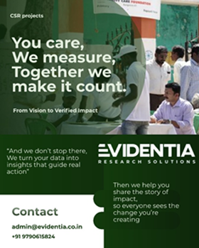
Research
OUR Events
What We Do
AUG
29
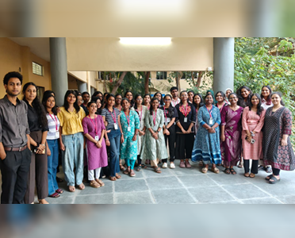
Upcoming – RWE5 2026: 5th National Conference on Real-World Evidence in Oncology
The upcoming RWE5 2026 conference in Chennai will bring together investigators, clinicians, researchers, and industry experts to explore the role of real-world evidence in advancing oncology care. The event will provide a collaborative platform to share research, exchange insights, and strengthen partnerships across the oncology ecosystem.
JUL
11
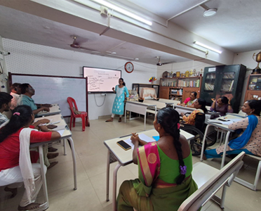
Capacity Building Workshop Conducted for Aarvam NGO
An interactive capacity-building workshop brought together the Aarvam NGO team to strengthen teamwork, accountability, ownership, and alignment with the organization's mission. Facilitated by Research Associate Sevathal K, the session encouraged open discussions, practical learning, and active participation.
JUL
07

Neurodiversity Summit 2026 at IIT Madras
The team engaged in the Neurodiversity Summit 2026 at IIT Madras, joining researchers, healthcare professionals, educators, policymakers, NGOs, and industry leaders to discuss inclusive futures. The summit highlighted the role of research, innovation, and cross-sector collaboration in advancing neurodiversity and evidence-based inclusion.
JUN
18
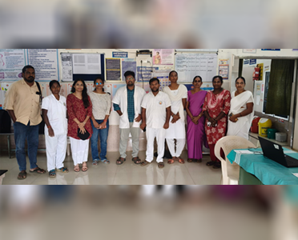
Monitoring & Evaluation Field Visit in Tribal Regions of Salem
A field visit was conducted across Karumandurai, Soolangurichi, and Kunnur in the Kalvarayan Hills as part of the ongoing M&E partnership with Vaishnavi Welfare and Charitable Trust. The visit included stakeholder interactions, programme implementation reviews, and an annual impact assessment of the USG machine for improving access to antenatal care for mothers in the region.
APR
02
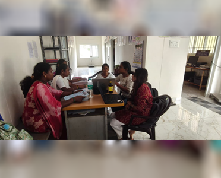
M&E Field Visit for Maternal Health Programmes in Kalvarayan Hills
A field research visit was conducted to support the Shakti and Jeevani maternal health programmes of Vaishnavi Welfare and Charitable Trust. The visit included training ASHA workers on digital data collection using EpiCollect5, engaging with local communities, and strengthening field monitoring to support evidence-based nutrition and public health programmes.
MAR
24
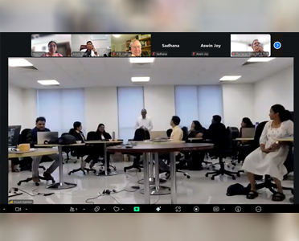
Research Mentorship with WHO-Supported SORT IT Initiative
Dr. Niraimathi Anandan served as a mentor for the SORT IT (Structured Operational Research and Training) initiative, supporting researchers in scientific writing and manuscript development. The WHO-supported programme, concluded at AIIMS Nagpur, strengthened implementation research and helped translate evidence into publishable research and actionable health recommendations.
MAR
25
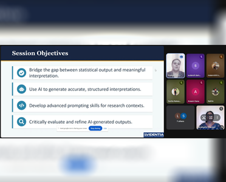
AI Workshop on Psychological Research at SKP College
Dr. Niraimathi Anandan and Research Associate Evangeline Jenitha delivered a workshop on "Beyond Statistics: AI for Meaningful Research Interpretation" during the National-Level Professional Development Program on AI in Psychological Research at Sri Kanyaka Parameswari Arts and Science College for Women. The session introduced faculty and research professionals to practical applications of AI for improving research interpretation and efficiency.
FEB
19

Research Writing Workshop at Anna Adarsh College for Women
A workshop on APA formatting, referencing, and plagiarism prevention was conducted for the Department of Psychology at Anna Adarsh College for Women. Facilitated by Research Associates Tamilarasi Dharaniraj and Sevathal K, the session equipped UG and PG students with practical skills in academic writing, reference management, and research integrity.
MAR
10
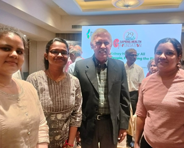
World Kidney Day – SAPIENS Health Foundation
The team participated in the World Kidney Day programme hosted by SAPIENS Health Foundation in Chennai as a past research collaborator on the NCD Risk Reduction & Salt Reduction Module. The event brought together healthcare experts to promote kidney health and highlighted the role of evidence-based research in strengthening community awareness and preventive healthcare initiatives.
JAN
27

Behaviour-Based Capacity Building Workshop Conducted for Ramana Hospital
A three-day behaviour-based capacity building workshop was conducted for the Oncology Department at Ramana Hospital, Trichy. The programme strengthened workplace communication, role clarity, conflict resolution, digital efficiency, and AI integration to support more effective healthcare teams.
MAR
05
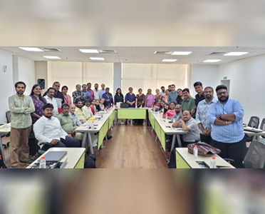
Fundraising & Donor Management Capacity Building Program
Representing Evidentia, Research Associate Tamilarasi Dharaniraj actively participated in sessions led by fundraising professionals, gaining practical insights into structured fundraising systems, donor relationship management, meaningful engagement strategies, and partnership building to support sustainable social impact initiatives.
FEB
18
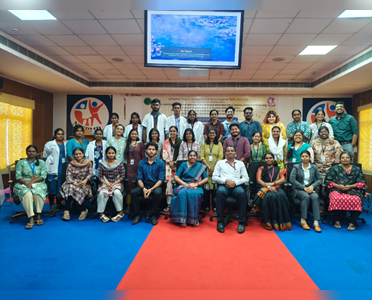
Psychological Research Workshop at NIEPMD
A two-day workshop for M.Phil. Clinical Psychology students was facilitated by Dr. Niraimathi Anandan. The session demystified statistics and introduced essential research methodologies, including the PICO and PICOT frameworks, helping students develop practical research skills for clinical practice.
MAR
04

AI for Data-Driven Decision-Making Workshop for TN Social Welfare Department
Director Dr. Niraimathi Anandan and Research Associate Sevathal K delivered an interactive training session on AI-driven decision-making for project heads and district teams under the Directorate of Social Welfare's Human Capital Development Programme. The workshop focused on using AI to analyse large datasets, identify trends, and improve reporting for initiatives including the Chief Minister's Breakfast Scheme and Noon Meal Programme.
FEB
06
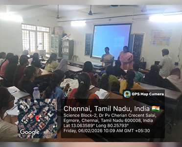
Research Methodology Workshop at Ethiraj College
Dr. Niraimathi conducted a specialised research workshop for Master's in Nutrition students at Ethiraj College for Women. The programme equipped students with practical knowledge in research methodology, data interpretation, and scientific documentation to strengthen evidence-based public health and nutrition research.
FEB
05
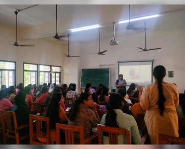
Research Workshop at Women's Christian College (WCC)
Dr. Niraimathi conducted a hands-on research workshop for postgraduate students at Women's Christian College (WCC). The session focused on research writing, plagiarism prevention, research ethics, documentation, and essential research skills to support the development of high-quality academic publications.
DEC
01
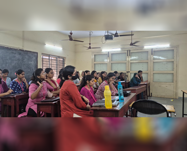
Research Workshop at MSSW
The Evidentia research team conducted a comprehensive four-day psychological research workshop for postgraduate psychology students at Madras School of Social Work (MSSW). The programme covered the complete research lifecycle, including research writing, statistical software, documentation, plagiarism prevention, and the academic publication process.